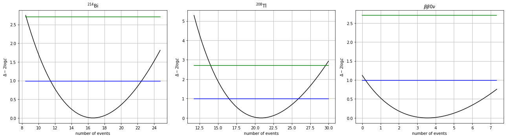

Estimate the number of signal events#
Objectives#
Estimate the number of signal events using the extended maximum likelihood fit and simulated experiments.
Estimate the p-value of the null hypothesis (no signal present).
Physics#
We are going to estimate the number of signal events using an extended maximum likelihood fit.
We will test the method here with simulated data.
Similarly to how we computed the number of background events in the blind sample, we fit the energy distribution in the enlarged energy window to the energy template distributions of the signal and background samples. Their PDFs, \(g_k(E), \;\; k = \mathrm{Bi}, \mathrm{Tl}, \beta\beta0\nu\), are obtained from simulated data.
We test the fitting method by generating an experiment with a number of background events compatible with our estimates from the blind data, and a trial number of signal events.
We can vary the number of signal events to study the performance of the fit.
Finally, we test the p-value of the null hypothesis for a given simulated experiment.
Analysis#
Importing modules#
%matplotlib inline
%load_ext autoreload
%autoreload 2
import numpy as np
import tables as tb
import pandas as pd
import matplotlib.pyplot as plt
import scipy.constants as constants
import scipy.stats as stats
import scipy.optimize as optimize
import warnings
warnings.filterwarnings('ignore')
import os, sys
from pathlib import Path
# Find the project root: honours FANAL_ROOT env-var, otherwise walks up from cwd
_env = os.environ.get('FANAL_ROOT') or os.environ.get('USCFANALDIR')
if _env and Path(_env, 'data').is_dir():
rootpath = str(Path(_env).resolve())
else:
rootpath = str(next(p for p in [Path.cwd(), *Path.cwd().parents]
if (p / 'data').is_dir() and (p / 'ana').is_dir()))
if rootpath not in sys.path:
sys.path.insert(0, rootpath)
print('Fanal root : ', rootpath)
add path to PYTHONPATH : /Users/hernando/work/docencia/master/Fisica_Particulas/USC-Fanal-v2/
import core.pltext as pltext # extensions for plotting histograms
import core.hfit as hfit # extension to fit histograms
import core.efit as efit # Fit Utilites - Includes Extend Likelihood Fit with composite PDFs
import core.utils as ut # generic utilities
import ana.fanal as fn # analysis functions specific to fanal
import ana.pltfanal as pltfn # plotting for fanal
import collpars as collpars # collaboration specific parameters
pltext.style()
Main parameters#
coll = collpars.collaboration
sel_ntracks = collpars.sel_ntracks
sel_eblob2 = collpars.sel_eblob2
sel_erange = collpars.sel_erange
sel_eroi = collpars.sel_eroi
print('Collaboration : {:s}'.format(coll))
print('number of tracks range : {:6d}'.format(sel_ntracks))
print('Blob-2 energy range : {:6.3f} MeV'.format(sel_eblob2))
print('Energy range : ({:6.3f}, {:6.3f}) MeV'.format(*sel_erange))
print('Energy RoI range : ({:6.3f}, {:6.3f}) MeV'.format(*sel_eroi))
Collaboration : new_gamma
number of tracks range : 1
Blob-2 energy range : 0.400 MeV
Energy range : ( 2.400, 2.700) MeV
Energy RoI range : ( 2.430, 2.480) MeV
# list of the analysis selection variables names and ranges
ntracks_range = (sel_ntracks, sel_ntracks + 0.1)
eblob2_range = (sel_eblob2, sel_erange[1]) # MeV
varnames = ['num_tracks', 'blob2_E', 'E']
varranges = [ntracks_range, eblob2_range, sel_erange]
print('ana varnames : ', varnames)
print('ana varranges : ', varranges)
# list of the reference selection variable names and ranges to get pdfs for the MC
refnames = ['num_tracks', 'E']
refranges = [ntracks_range, sel_erange]
print('ref varnames : ', refnames)
print('ref varranges : ', refranges)
ana varnames : ['num_tracks', 'blob2_E', 'E']
ana varranges : [(1, 1.1), (0.4, 2.7), (2.4, 2.7)]
ref varnames : ['num_tracks', 'E']
ref varranges : [(1, 1.1), (2.4, 2.7)]
# number of blind events
n_Bi_total = collpars.n_Bi_total
n_Tl_total = collpars.n_Tl_total
eff_Bi_E = collpars.eff_Bi_E
eff_Tl_E = collpars.eff_Tl_E
eff_bb_E = collpars.eff_bb_E
print('Number of bkg events in full data : Bi = {:6.2f}, Tl = {:6.2f}.'.format(n_Bi_total, n_Tl_total))
Number of bkg events in full data : Bi = 651.28, Tl = 4687.51.
The data#
# set the path to the data directory and filenames
dirpath = rootpath+'/data/'
filename = 'fanal_' + coll + '.h5'
print('Data path and filename : ', dirpath + filename)
# access the simulated data (DataFrames) for the different samples (Bi, Tl, bb) located in the data file
mcbi = pd.read_hdf(dirpath + filename, key = 'mc/bi214').fillna(0.)
mctl = pd.read_hdf(dirpath + filename, key = 'mc/tl208').fillna(0.)
mcbb = pd.read_hdf(dirpath + filename, key = 'mc/bb0nu').fillna(0.)
# set the names of the samples
mc_samples = [mcbi, mctl, mcbb] # list of the mc DFs
sample_names = ['Bi', 'Tl', 'bb']
sample_names_latex = [ r'$^{214}$Bi', r'$^{208}$Tl', r'$\beta\beta0\nu$',] # str names of the mc samples
for i, mc in enumerate(mc_samples):
print('MC Sample {:s}, number of simulated events = {:d}'.format(sample_names[i], len(mc)))
Data path and filename : /Users/hernando/work/docencia/master/Fisica_Particulas/USC-Fanal-v2//data/fanal_new_gamma.h5
MC Sample Bi, number of simulated events = 60184
MC Sample Tl, number of simulated events = 687297
MC Sample bb, number of simulated events = 47636
Check the method to extract \(n^{\beta\beta}_E\)#
We generate a MC experiment with a number of events compatible with the estimated number of background events and a hypothetical number of signal events.
We fit the energy distribution of the selected events to the sample PDFs: Bi, Tl, bb.
We perform a profile scan to estimate the confidence interval.
We compute the p-value using the ratio of the likelihood at the best estimate versus the case where the signal is forced to zero.
Worked example: generate and fit a simulated experiment#
Before you try it yourself, let us walk through the full procedure step by step with a large signal (easy to see in the fit).
We will:
Define the expected number of events for each sample (Bi, Tl, \(\beta\beta0\nu\))
Generate a simulated experiment by sampling from the MC templates
Fit the energy distribution using the extended maximum likelihood
Inspect the results
# --- Step 1: define event numbers ---
# We choose a large signal: as many bb events in the RoI as Bi events
# (this makes the signal clearly visible in the fit)
n_bb_RoI_trial = collpars.n_Bi_RoI # trial: same as Bi in RoI
n_bb_total_trial = n_bb_RoI_trial / collpars.eff_bb_RoI # scale to total
# Total events per sample
n_total_example = np.array([n_Bi_total, n_Tl_total, n_bb_total_trial])
# Expected events in the energy window (after selection)
n_E_example = np.array([n_Bi_total * eff_Bi_E,
n_Tl_total * eff_Tl_E,
n_bb_total_trial * eff_bb_E])
for name, nt, ne in zip(sample_names, n_total_example, n_E_example):
print(' {:2s}: n_total = {:8.1f}, n_E = {:6.1f}'.format(name, nt, ne))
# --- Step 2: prepare the fit and generate a MC experiment ---
# prepare_fit_ell builds the extended likelihood from MC templates
fit_example = fn.prepare_fit_ell(mc_samples, n_total_example,
varnames, varranges, refnames, refranges)
# generate_mc_experiment samples events from each MC template
# with Poisson-fluctuated counts around n_total_example
mcdata_example = fn.generate_mc_experiment(mc_samples, n_total_example)
print('Generated experiment: {:d} events passing selection'.format(len(mcdata_example)))
# --- Step 3: fit the simulated experiment ---
result_example, values_example, ell_example, _ = fit_example(mcdata_example)
n_est_example = result_example.x
print('\nComparison: expected vs estimated events in the energy window')
for name, expected, estimated in zip(sample_names, n_E_example, n_est_example):
print(' {:2s}: expected = {:6.1f}, estimated = {:6.1f}'.format(name, expected, estimated))
# Plot the fit result
pltfn.plot_fit_ell(values_example, n_est_example, ell_example,
parnames=sample_names_latex)
# --- Step 4: profile likelihood scan for uncertainties ---
nis_ex, tmus_ex = fn.tmu_scan(values_example, n_est_example, ell_example,
sizes=(2., 2., 2.))
pltfn.plot_tmu_scan(nis_ex, tmus_ex, titles=sample_names_latex)
cl = 0.68
mucis_ex = [efit.tmu_conf_int(ni, tmu, cl) for ni, tmu in zip(nis_ex, tmus_ex)]
for i, ci in enumerate(mucis_ex):
print('{:s}: n_est = {:5.1f} ({:+.1f}, {:+.1f}) at {:2.0f}% CL'.format(
sample_names[i], n_est_example[i], *(ci - n_est_example[i]), 100*cl))
Observations from the example:
The fit recovers the input number of events within the statistical uncertainties.
The profile likelihood parabolas show the expected \(\Delta(-2\log\mathcal{L}) = 1\) crossings.
With a large signal, the \(\beta\beta0\nu\) component is clearly visible in the energy spectrum.
Now it is your turn#
Exercise: Repeat the procedure above with different signal strengths.
Try factor = 0.5, 0.1, 0.0 to see how the fit behaves when the signal becomes small or absent.
In particular, study:
How well does the fit recover the true number of signal events?
What happens to the uncertainties as the signal shrinks?
Can the fit distinguish signal from background when the signal is very small?
Exercise
Generate other experiments with different number of signal events to study the performance of the fit
# Set the expected number of events for each sample (Bi, Tl, bb) in the energy window.
# For example:
# nbb_trial = 5 # trial number of signal events
# n_total = [n_Bi_total, n_Tl_total, nbb_trial] (total events per sample)
# n_E = [n_Bi_total * eff_Bi_E, n_Tl_total * eff_Tl_E, nbb_trial * eff_bb_E]
# YOUR CODE HERE
Simulate & Fit the data of an experiment#
The simulated experiment expects the same number of background events as our experiment and a certain number of signal events.
# Generate a simulated experiment and fit it using the extended likelihood.
#
# 1) Prepare the fit:
# fit = fn.prepare_fit_ell(mc_samples, n_E, refnames, refranges)
#
# 2) Generate a MC experiment:
# experiment = fn.generate_mc_experiment(mc_samples, n_E, varnames, varranges)
#
# 3) Fit the experiment:
# result, values, ell, _ = fit(experiment)
# n_est = result.x
# YOUR CODE HERE
for i, ni in enumerate(n_total):
print('Number of {:s} total events = {:6.3f}'.format(sample_names[i], ni))
for i, ni in enumerate(n_E):
print('Number of {:s} expected events in E window = {:6.3f}'.format(sample_names[i], ni))
for i, ni in enumerate(n_est):
print('Number of {:s} estimated events in E window = {:6.3f}'.format(sample_names[i], ni))
Number of Bi total events = 651.280
Number of Tl total events = 4687.512
Number of bb total events = 9.619
Number of Bi expected events in E window = 11.788
Number of Tl expected events in E window = 34.125
Number of bb expected events in E window = 4.992
Number of Bi estimated events in E window = 16.590
Number of Tl estimated events in E window = 20.847
Number of bb estimated events in E window = 3.563
Parameter uncertainty estimation#
We perform a likelihood scan to estimate the parameter uncertainties.
We estimate the 68% C.L. intervals.
nis, tmus = fn.tmu_scan(values, n_est, ell, sizes = (2., 2., 2.))
pltfn.plot_tmu_scan(nis, tmus, titles = sample_names_latex)

cl = 0.68
mucis = [efit.tmu_conf_int(ni, tmu, cl) for ni, tmu in zip(nis, tmus)]
for i, ci in enumerate(mucis):
print('Number of {:s} events CI at {:4.0f} % CL = ({:5.2f}, {:5.2f})'.format(sample_names[i], 100*cl, *ci))
Number of Bi events CI at 68 % CL = (11.77, 22.41)
Number of Tl events CI at 68 % CL = (16.56, 25.88)
Number of bb events CI at 68 % CL = ( 0.30, 7.34)
for i, ci in enumerate(mucis):
print('Number of {:s} events CI at {:4.0f} % CL = {:5.2f} {:5.2f} +{:5.2f}'.format(sample_names[i], 100*cl,
result.x[i],
*(ci - result.x[i])))
Number of Bi events CI at 68 % CL = 16.59 -4.82 + 5.82
Number of Tl events CI at 68 % CL = 20.85 -4.29 + 5.03
Number of bb events CI at 68 % CL = 3.56 -3.26 + 3.78
Compute the p-value under the no-signal hypothesis#
We compute the p-value of the null hypothesis (that there is no signal).
# test the 0 value in the 2-position of the parameters (that is the number of bb events)
q0 = efit.tmu(values, ell, result.x, 0, ipos = 2)
z0 = np.sqrt(q0)
p0 = 1 - stats.norm.cdf(z0)
#p0 = stats.chi2.sf(q0, 1)/2.
print('null hypothesis p-value {:1.2e}, {:4.2f} sigmas'.format(p0, z0))
null hypothesis p-value 1.45e-01, 1.06 sigmas
Estimate the half-life of the simulated experiment#
We estimate the value of the half-life, \(\mathcal{T}_{1/2}^{\beta\beta0\nu}\), using as inputs:
the estimated number of signal events in the enlarged energy window (from the fit)
the total efficiency for selecting signal events
the exposure (kg·y)
The formula relating the half-life to the number of signal events is:
Where:
\(\delta\) is the abundance of \(^{136}\mathrm{Xe}\) (in our detector, 0.9)
\(\epsilon^{\beta\beta}_E\) is the efficiency of selecting signal events in the energy window (as a fraction, computed using MC)
\(M\) is the mass of the detector (kg)
\(t\) is the exposure time (y)
\(N_A\) is the Avogadro number
\(W\) is the atomic mass (g/mol)
Exercise: Compute the half-life and its uncertainty!
# Compute the half-life using the formula from the markdown above.
# Use fn.half_life() or implement it directly:
# tau = (delta * eff_bb_E * exposure * constants.Avogadro * np.log(2)) / (n_bb_est * W)
#
# Propagate the uncertainty from the confidence interval on n_bb.
# YOUR CODE HERE